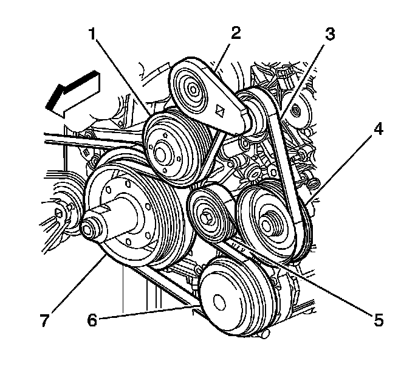
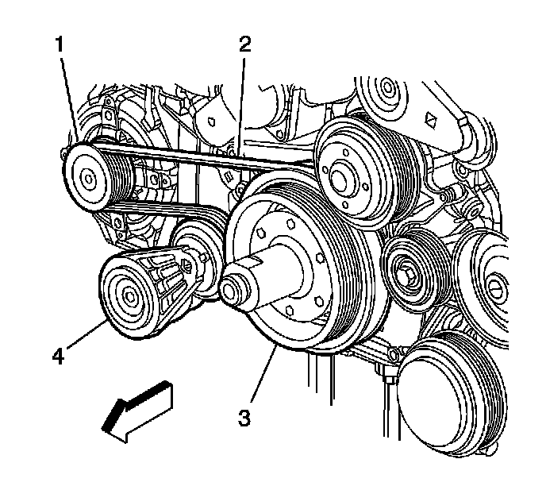

Generator Drive Belt Replacement
Generator Drive Belt Replacement
Removal Procedure

1. Remove the air conditioning, power steering, and water pump belt (3). Refer to Water Pump and Air Conditioning Compressor and Power Steering Pump Belt Replacement (Water Pump and Air Conditioning Compressor and Power Steering Pump Belt Replacement) .

2. Rotate the generator drive belt tensioner (4) clockwise to release drive belt tension.
3. Slide the generator drive belt from the generator pulley (1).
4. Allow the drive belt tensioner to return to the relaxed position.
5. Remove the generator drive belt from the pulleys.
Installation Procedure
1. Route the generator drive belt to the crankshaft pulley (3) and the tensioner (4).
2. Rotate the generator drive belt tensioner (4) clockwise.
3. Route the generator drive belt over the generator pulley (1).
Important: Ensure that the generator drive belt is properly aligned and seated into the grooves of the accessory drive pulleys.
4. Release the drive belt tensioner and inspect the generator drive belt for proper seating in the accessory drive pulleys.
5. Install the air conditioning, power steering, and water pump belt (3). Refer to Water Pump and Air Conditioning Compressor and Power Steering Pump Belt Replacement (Water Pump and Air Conditioning Compressor and Power Steering Pump Belt Replacement) .